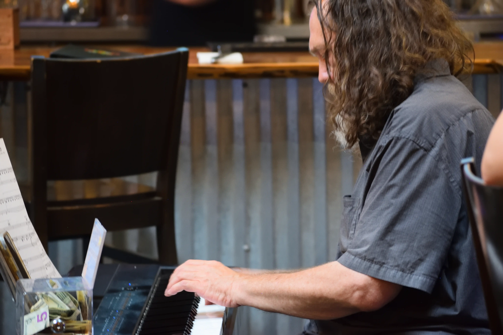

Noosh Nosh: Thriving Through Change and Culinary Innovation


Jump to Content
Background
Discover Noosh Nosh, a culinary gem nestled at 4816 Brownsboro Center in Louisville, Kentucky, where the Persian phrase "Noosh Nosh" translates to "Delicious" or "Tasty" in English, encapsulating the essence of their menu. With a commitment to offering diverse culinary options, including vegetarian, vegan, and gluten-free dishes, this locally owned establishment spearheaded by Indian American restaurateurs emphasizes the use of locally sourced ingredients to create the healthiest, freshest, and most flavorful dishes possible.
Noosh Nosh's Flavorful Journey
Immerse yourself in a culinary journey at Noosh Nosh, where they strive to offer an extensive menu that caters to various dietary preferences. From scrumptious vegetarian appetizers to mouthwatering signature dishes like chicken tikka pizza and the acclaimed goat cheese dip, every bite promises to be a delight for your taste buds and your conscious. Their menu is a symphony of flavors, crafted with care and dedication to quality.
Noosh Nosh prides itself on creating a warm and welcoming atmosphere, perfect for family dinners, date nights, business lunches, or casual meetups. The restaurant's ambiance strikes a balance between semi-casual and business casual, offering a comfortable space for guests to savor their meals and connect with loved ones.
A Taste of Tradition with a Modern Twist
Offering a delightful brunch on weekends accompanied by live piano performances or experiencing the vibrant lunch and dinner scene during the week, Noosh Nosh blends tradition with innovation. Their commitment to the community shines through their diverse team of employees, cuisine, and clientele, creating a welcoming space where everyone feels like family.
Noosh Nosh prides itself on creating a warm and welcoming atmosphere, perfect for family dinners, date nights, business lunches, or casual meetups. The restaurant's ambiance strikes a balance between semi-casual and business casual, offering a comfortable space for guests to savor their meals and connect with loved ones.
The Departure of Anoosh
Following the departure of Anoosh, the revered former owner and chef whose culinary expertise and personalized touch resonated deeply with patrons, Noosh Nosh faced the daunting task of preserving its customer base and upholding the legacy built over the years.
General Manager Akshay Kadam a.k.a. AK reflects on the challenge, remarking, "People feared a new face” taking over such a beloved establishment. The transition after Anoosh's departure triggered a wave of uncertainty and nostalgia among loyal customers, as they grappled with the absence of familiar flavors and comforting dishes.
The Role of Chef Arthik
Chef Arthik has played a pivotal role in maintaining Noosh Nosh's loyal customer base and upholding the culinary standards set by the esteemed Chef Anoosh.
AK acknowledges Arthik's dedication to preserving taste consistency and mastering the intricate flavors that define the restaurant's signature dishes. AK describes Arthik's commitment to honoring the original menu's essence while infusing new specials, which has been instrumental in meeting and exceeding customer expectations.
With a keen eye for detail and a passion for culinary innovation, Chef Artik has seamlessly integrated his expertise into the kitchen, ensuring that regulars continue to savor the familiar flavors they adore while enticing them with new culinary delights, such as the revered birria tacos. Through his dedication to culinary excellence, Chef Arthik has become a linchpin in Noosh Nosh's continued success and customer satisfaction.
Navigating the Post-COVID Landscape
Navigating the post-COVID landscape and the transition of a new owner has brought forth a set of unique challenges for Noosh Nosh. AK reflects on the evolving dynamics of the restaurant industry, candidly acknowledging, "Business is not the same" post-pandemic. This highlights the shift in consumer behaviors and operational hurdles faced by the establishment.
With a change in ownership and the departure of Anoosh, the former owner and chef, maintaining customer loyalty and satisfaction has been a key challenge. As regular patrons notice subtle differences and adapt to the new landscape, Noosh Nosh strives to enhance its offerings while staying true to its legacy, all while navigating the nuances of a post-pandemic world.
Community Engagement and Growth
As part of our ongoing philanthropic efforts, Noosh Nosh actively supports the local community through Apron donations and providing some free meals to schools. With a focus on inclusion and health, the menu boasts gluten-free and vegan-friendly options, catering to a wide range of dietary preferences and ensuring that there truly is something for everyone to enjoy.
Conclusion
With a legacy spanning almost a decade, Noosh Nosh remains a beacon of culinary excellence in Louisville, with a dedicated team led by AK and Arthik striving to uphold the restaurant's reputation for quality, consistency, and community engagement. Keep an eye out for this restaurant on your next night out.